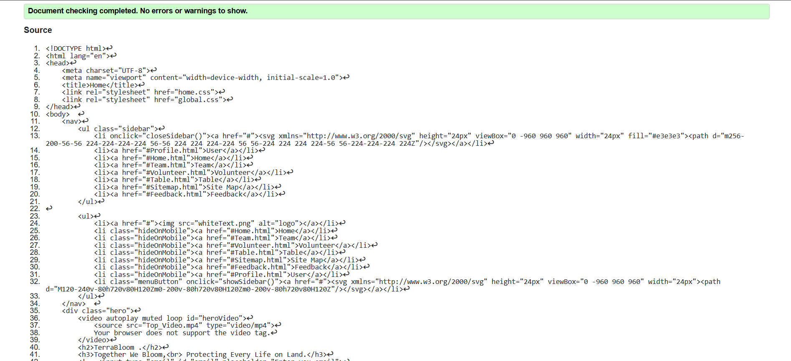
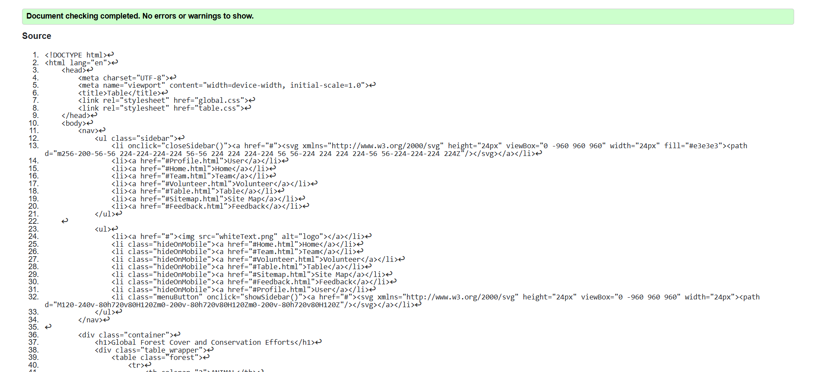
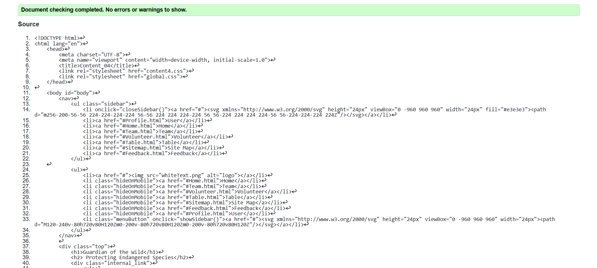

Home Page validation report
The Home page of the website ensures accessibility, usability, and a visually engaging experience. It features a structured navigation system, a dynamic video banner, and well-organized sections highlighting key targets, news, programs, and events. The page emphasizes clear content presentation, responsive design, and user interaction through call-to-action links. Proper validation of interactive elements, media content, and navigation ensures seamless functionality, enhancing user experience and compliance with web accessibility standards.

Back to Page Editor page
Table Page validation report
The Table page presents critical information on global forest conservation and endangered species in a structured and visually engaging manner. It features an accessible and well-organized table with images, species data, and conservation efforts, ensuring clarity for users. The page emphasizes usability by maintaining a responsive layout and ensuring proper navigation. Validation of table formatting, image accessibility, and content hierarchy ensures a seamless experience, aligning with web standards and enhancing user engagement with conservation data.

Back to Page Editor page
Content Page validation report
The "Guardian of the Wild" page presents a compelling conservation initiative focused on protecting endangered species. It features a clean, navigable layout with a responsive menu system and clear section hierarchy. The content is organized into three main sections: "Why It Matters," highlighting the importance of biodiversity; "How You Can Help," suggesting actionable steps for conservation; and "Join the Movement," encouraging community participation with a prominent "Apply" button for volunteers.
